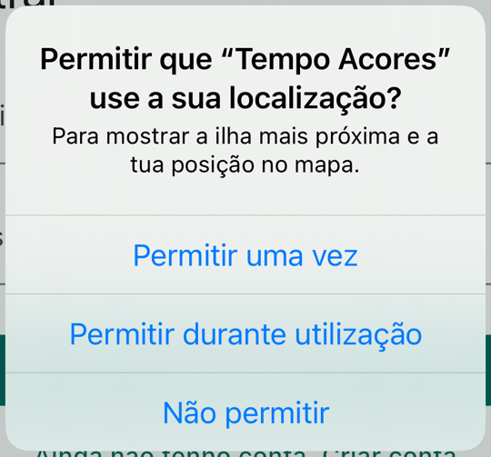
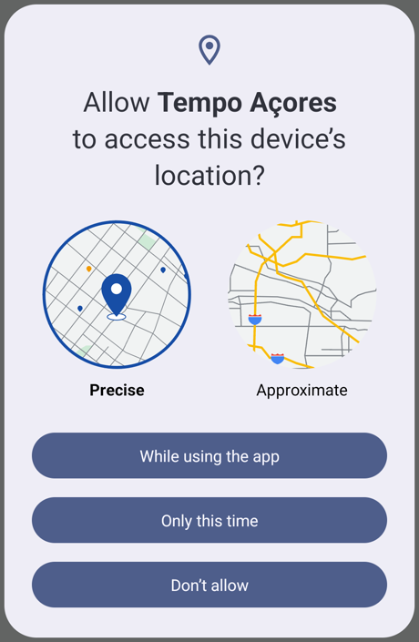
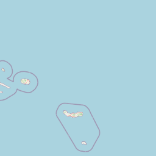
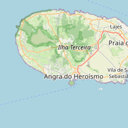
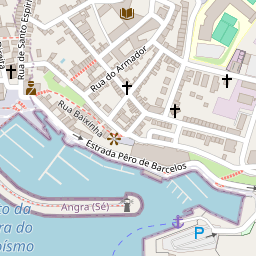

Aula 21 · Semana 10 · Segunda, 9 de novembro de 2026 · 16:00 às 18:00
Workshop: localização, mapas e permissões
Teoria: de onde vem a posição do telemóvel, o que custa em bateria, as permissões e as quatro respostas possíveis, e um mapa feito de azulejos. Um jogo sobre as respostas da pessoa. Prática em dois passos no Tempo Açores: "Onde estou?" e a ilha mais próxima. O mapa com um pino por ilha fica para quem tiver tempo, e entra no projeto do grupo na sprint.
No fim desta aula consegues
- Explicar de onde vem a posição do telemóvel (GPS, Wi-Fi e antenas) e porque é que mais precisão custa mais bateria.
- Pedir a permissão de localização no momento certo e tratar as quatro respostas, incluindo "nunca mais".
- Calcular a distância a cada ilha e dizer qual é a mais próxima.
- Explicar como se monta um mapa com azulejos do OpenStreetMap e o que custa mostrá-lo.
- Escolher entre Google Maps, Apple Maps e OpenStreetMap, e dizer o que cada um custa.
Depois do toque em "Onde estou?"
Posso saber? A janela verdadeira e as quatro respostas


- No iOS, a razão vem do
Info.plist(NSLocationWhenInUseUsageDescription). Sem ela, a janela nem aparece. - "Nunca mais": no iOS basta uma recusa; no Android são duas. Depois disso, só nas definições.
Onde estou? Três fontes, três erros
- GPS: o mais exato, mas precisa de céu aberto e gasta mais bateria.
- Wi-Fi: as redes à volta, comparadas com um catálogo. Funciona dentro de casa.
- Antenas: quase sem bateria, mas só sabe o bairro.
- A app não escolhe a fonte: pede uma precisão. Aqui chega
LocationAccuracy.medium. - Com um
timeLimitde 15 segundos, o cartão diz "Sem sinal. Tenta perto de uma janela." - Quem se mexe pede um stream:
getPositionStream().
Como mostro? Um mapa são azulejos

6/27/24.png
10/434/392.png
16/27813/25127.png- Cada azulejo é uma imagem de 256 px, pedida a
tile.openstreetmap.org/{z}/{x}/{y}.png: zoom, coluna e linha. A app só pede os que estão no ecrã. flutter_mapdesenha-os em Dart: igual no Chrome, no Android e no iOS. Trocar de fornecedor é trocar o endereço.- A atribuição "© OpenStreetMap" fica sempre visível no mapa.
Qual mapa? Duas perguntas
- Grátis não é sem regras: no OpenStreetMap, a atribuição fica visível e a app identifica-se (
userAgentPackageName). Descarregar azulejos em massa é proibido.
Para os testes
- A app pede uma precisão; é o sistema que escolhe e junta as fontes.
- Pede a precisão mais baixa que o caso de uso aguenta: precisão alta é GPS, e GPS é bateria.
- Começa pela permissão "em uso", e pela aproximada se chegar; "sempre" e "precisa" são pedidos à parte e posteriores.
- Uma app trata quatro casos: concedida, negada, negada para sempre e serviço desligado.
- Segundo plano só para funcionalidades centrais, com declaração nas lojas e a pessoa a ver que está a acontecer. Geofencing é feito pelo sistema, poupa bateria e tem minutos de atraso.
- Um mapa web ou móvel é feito de azulejos de 256 px, pedidos por nível de zoom, coluna e linha.
- O OSM é grátis mas tem regras de uso e atribuição obrigatória; o Google Maps exige chave e conta de faturação mesmo quando não cobra.
Jogo: o que responde a pessoa?
Um cenário de cada vez, todos ao mesmo tempo. Vota, discute com o colega do lado, vota outra vez.
O que responde a pessoa? A turma
Hoje, na app


- Pedir a permissão e tratar as quatro respostas: a posição aparece no cartão.
- Medir a distância a cada ilha e ficar com a mais curta.
- Se houver tempo: um pino com o nome em cada ilha do mapa; tocar abre a folha da ilha.
- Fica no branch
passo-4: o botão "A minha posição" leva o mapa até ti.
Começar: o repositório de hoje
git clone https://github.com/Tiago-Rocha/pdm-aula-21.git
cd pdm-aula-21
flutter pub get- Corre a app, tudo numa linha:
flutter run -d chrome --dart-define=CLIENT_ID=... --dart-define=CLIENT_SECRET=.... OclientIde oclientSecretsão os do issue #1 do teupdm-miniprojeto, ou os do teu grupo. - Entra com a tua conta. Por cima da lista está um cartão novo com o botão Onde estou?. Toca-lhe: "Sem a tua posição não há ilha mais próxima". É o ponto de partida.
- Na barra de cima há um botão novo, o mapa. Abre-o: os Açores em azulejos, com nove pinos pequenos sem nome.
Hoje trabalhas nos comentários TODO 1 e TODO 2; o TODO 3 se houver tempo. Abre um segundo terminal para os comandos git. No Chrome, a janela de permissão é a do próprio browser; para voltar a testar, carrega no cadeado ao lado do endereço e repõe a permissão.
1. Posso saber onde estás?
check() do LocationService./// What the phone answered when the app asked for the position.
enum LocationStatus { ready, serviceOff, denied, deniedForever }- O
LocationNotifierchamacheck()e, se a resposta forready, pede a posição. Para cada outra resposta tem uma frase pronta para o cartão. - O
geolocatorfala com o sistema:isLocationServiceEnabled(o serviço está ligado?),checkPermission(o que respondeu da última vez?) erequestPermission(o diálogo).
Passo 1: as quatro respostas
/// Asks for permission, if needed, and says which answer came back.
Future<LocationStatus> check() async {
if (!await Geolocator.isLocationServiceEnabled()) {
return LocationStatus.serviceOff; // off for every app, not just ours
}
var permission = await Geolocator.checkPermission();
if (permission == LocationPermission.denied) {
permission = await Geolocator.requestPermission(); // the dialog
}
return switch (permission) {
LocationPermission.whileInUse ||
LocationPermission.always => LocationStatus.ready,
LocationPermission.deniedForever => LocationStatus.deniedForever,
_ => LocationStatus.denied,
};
}check(): primeiro o serviço, depois a permissão, e no fim o switch que traduz a resposta do sistema para a nossa.Na app: toca em "Onde estou?". O Chrome pergunta; aceita, e o cartão diz "Estás em 37.74, -25.67". Repõe a permissão no cadeado, recusa, e o cartão diz "Sem permissão. Muda isso nas definições". Nada rebenta. No Chrome, recusar conta logo como "nunca mais"; no telemóvel, a primeira recusa é só "agora não".
requestPermission() quando a resposta anterior foi denied?2. A ilha mais próxima
double distanceTo(Position position, Island island) {
return Geolocator.distanceBetween(
position.latitude,
position.longitude,
island.latitude,
island.longitude,
);
}distanceBetweendevolve metros em linha reta sobre a esfera. Não é distância por estrada; para saber a ilha chega.- Cada
Islandtraz agoralatitudeelongitudeda API: o centro da ilha. - O resultado é um record,
({Island island, double metres}): dois valores de uma vez, sem criar uma classe.
Passo 2: medir e ficar com a mais curta
git stash -u
git checkout passo-1
flutter pub get/// Measures the distance to every island; the shortest wins.
Nearest nearestIsland(Position position, List<Island> islands) {
var best = islands.first;
var shortest = double.infinity;
for (final island in islands) {
final metres = distanceTo(position, island);
if (metres < shortest) {
shortest = metres;
best = island;
}
}
return (island: best, metres: shortest);
}nearest = nearestIsland(found, islands);Na app: toca em "Onde estou?". O cartão passa a dizer "Estás a 16 km de São Miguel".
3. Se houver tempo: um pino por ilha
FlutterMap é uma pilha de camadas. O pino é um widget normal preso a uma latitude e longitude.children: [
TileLayer(
urlTemplate: 'https://tile.openstreetmap.org/{z}/{x}/{y}.png',
userAgentPackageName: 'pt.uac.tempo_acores',
),
MarkerLayer(
markers: [
for (final island in islands) _marker(context, island),
if (position != null) _mePin(position),
],
),
const RichAttributionWidget(
alignment: AttributionAlignment.bottomLeft, // the button is right
attributions: [TextSourceAttribution('OpenStreetMap contributors')],
),
],Passo 3: um pino com o nome
git stash -u
git checkout passo-2
flutter pub getimport '../widgets/island_sheet.dart';
/// A pin with the name; a tap opens the sheet.
Marker _marker(BuildContext context, Island island) {
final theme = Theme.of(context);
return Marker(
point: LatLng(island.latitude, island.longitude),
width: 110,
height: 56,
child: GestureDetector(
onTap: () => showIslandSheet(context, island),
child: Column(
mainAxisSize: MainAxisSize.min,
children: [
Icon(Icons.place, size: 32, color: theme.colorScheme.primary),
Text(island.name, style: theme.textTheme.labelSmall),
],
),
),
);
}_marker: um GestureDetector com uma Column lá dentro, o ícone em cima e o nome em baixo. A folha, showIslandSheet, já está feita em widgets/island_sheet.dart.Na app: nove pinos com nome. Toca num: abre a folha com a fotografia e, se já tocaste em "Onde estou?", a distância até ti. Faz zoom no grupo do meio para separar as cinco ilhas.
Passo 4, no branch: a minha posição no mapa
git stash -u
git checkout passo-3
flutter pub get/// Asks for the position and moves the map there.
Future<void> _goToMe() async {
final location = context.read<LocationNotifier>();
await location.locate(context.read<ForecastNotifier>().islands);
if (!mounted) return; // the person may have left the screen
final position = location.position;
if (position == null) {
ScaffoldMessenger.of(context)
.showSnackBar(SnackBar(content: Text(location.message)));
return;
}
// the red pin is already there: the screen watches the notifier
_controller.move(LatLng(position.latitude, position.longitude), 9);
}_goToMe. Pede a posição ao LocationNotifier, o mesmo do cartão, e move a câmara para lá com o MapController.Na app: toca no botão redondo. O mapa centra-se em ti, com um pino vermelho. Se a permissão estiver negada, aparece a frase do cartão em baixo.
Onde ficámos
- O
check()pede a permissão e traduz as quatro respostas (passo 1). - O
nearestIslandmede e fica com a mais curta; o notifier guarda (passo 2). - Um pino por ilha, com o nome e a folha (passo 3).
- "A minha posição" pede ao notifier e move a câmara (passo 4).
O branch passo-4 é o estado final. A pasta location/, o LocationNotifier, o cartão, a folha e o MapScreen passam para o projeto do grupo como estão.
Para o projeto: o separador Mapa
- No projeto do grupo:
flutter pub add geolocator flutter_map latlong2. Depois as permissões noAndroidManifest.xmle a frase noInfo.plist, copiadas do repositório de hoje. - Copia
lib/location/,lib/state/location_notifier.dart,lib/widgets/nearest_card.dart,lib/widgets/island_sheet.dartelib/screens/map_screen.dart. O vossoIslandprecisa delatitudeelongitude, como emlib/models/island.dart. Regista oLocationNotifiernomain.dart, como no de hoje. - Com o
go_routerdo projeto: uma rota/mapae um destino "Mapa" naNavigationBar, em vez do botão na barra. O cartão vai para o ecrã de início. - Um PR por grupo, com um revisor. A definição de pronto: corre no telemóvel, a permissão negada não rebenta a app, e a atribuição do OSM está visível.
Até amanhã
Amanhã
- Terça, 10 de novembro, das 08:30 às 10:30: sprint 2 no projeto. O separador Mapa é a primeira tarefa.
- Tragam a app do grupo a correr no telemóvel e o repositório de hoje no passo 2, pelo menos.
- O estado final de hoje fica no branch
passo-4:git stash -ue depoisgit checkout passo-4.
Para quem quiser ler mais
- geolocator: as precisões por plataforma, os erros de cada método e o que cada sistema exige.
- Location permissions no Android: precisa vs aproximada, em uso vs segundo plano, o que mudou em cada versão.
- Requesting authorization to use location services: as regras da Apple para "em uso" e "sempre".
- flutter_map: camadas, pinos, atribuição e fornecedores de azulejos.
- Tile usage policy do OpenStreetMap: as regras dos azulejos públicos.